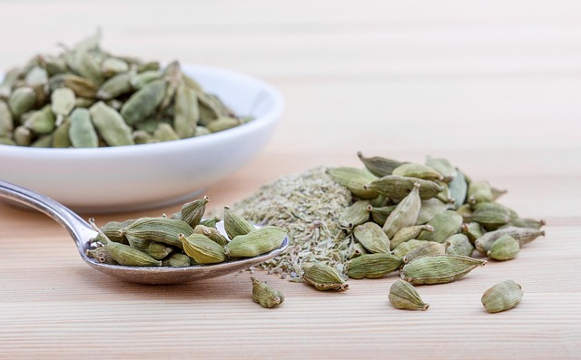

Learning about this species through a school project is truly amazing. I've tasted it, and it definitely adds a unique flavor to different dishes. I've researched various articles about this species, and it's most popular in India and Guatemala.
Interesting Facts About Green Cardamom
Green cardamom is considered one of the oldest and most valuable spices in the world, especially in India, Egypt, Guatemala, and Greece. Researchers conducting expeditions to investigate the world's earliest spice species have found it used not only in cooking but also in perfumes, medicine, and even funerary rituals. Although native to India, Guatemala is currently the world's largest producer of green cardamom, supplying a large part of the global market, particularly in the Middle East, where it is a key ingredient in coffee and traditional desserts. Most people use green cardamom in cooking and perfumery. It has a complex aroma that combines floral, citrus, minty, and eucalyptus notes, making it easy to blend and use in both sweet and savory dishes. Its essential oils are also widely used in perfumes, toothpaste, mouthwash, and aromatherapy thanks to their fresh scent and antibacterial properties.
The Art and Science of Growing Green Cardamom

Green cardamom thrives in specific microclimates of tropical mountain regions, generally at altitudes between 600 and 1500 meters above sea level. Caring for this species is not overly complicated and anyone can do it. The plants require partial shade, so they are traditionally grown under the canopy of taller trees. Green cardamom is incredibly sensitive to its environment. It needs consistent rainfall of between 150 and 400 centimeters annually, well-drained soil rich in organic matter, and temperatures between 10 and 35 degrees Celsius.
Flavor and Recipes
Cardamom adds extraordinary flavor to everything from Swedish cardamom scones to Finnish pulla bread. It has a natural sweetness and a distinctive aroma. In Middle Eastern cuisine, cardamom is very important because it has been incorporated into lamb dishes, where it contrasts with the flavor of the meat while adding aromatic depth. It has also been used in traditional Arabic coffee, where the ratio of cardamom to coffee is crucial for achieving the perfect flavor. For maximum impact in baked goods, the seeds are usually ground fresh and added at the beginning of the mixing process. For delicate preparations such as custards or cream-based desserts, it is preferable to infuse whole pods in warm cream and strain them, which yields a strong cardamom essence.
Medicinal Properties and Health Benefits
Research into the therapeutic applications of cardamom, supported by consultations with Ayurvedic practitioners and modern nutritionists, has revealed why this spice has been valued in traditional medicine for over 4,000 years. Cardamom contains potent bioactive compounds, such as cineole, terpinene, limonene, and sabinene, which contribute to its antimicrobial, antioxidant, and anti-inflammatory properties. Clinical studies published in medical journals, including research in the Journal of Ethnopharmacology, demonstrate that cardamom consumption may help lower blood pressure, improve digestive health, and provide antioxidant protection. Individuals with specific health conditions are advised to consult a healthcare professional before using cardamom for therapeutic purposes, especially in concentrated forms or in large quantities.
Experience Authentic Green Cardamom
Ready to discover the difference ethically sourced, premium green cardamom can make in your kitchen? Contact us today for more information about green cardamom!